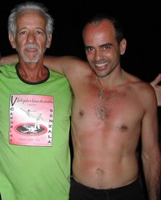
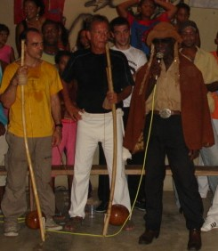
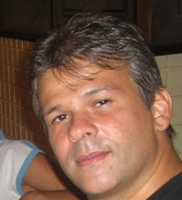
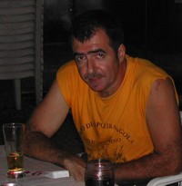
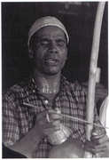

 Maître Paulo Flores (à gauche)
 Maître Rafa (au centre)
 Frederico Baeta Neves Mussa a commencé la capoeira à l’âge de 7 ans avec son frère ainé qu’était élève de Maître Canela. A dix ans il s’inscrit à l’Académie de Maître Corvão. Ensuite il passe à s’entraîner avec Maître Lua do Cruzeiro do Sul où il obtient sa première graduation. Par la suite Maître Lua prend distance de la capoeira et Mussa passa à enseigner sans avoir affiliation à aucun maître. Il crée à Grajau, zone Nord de la ville de Rio le Groupe Camugerê et développe des travaux sociaux dans les alentours du quartier. 1990 il rencontre Maître Neco qu’appartenait à l’époque au Grupo de Capoeira Angola Pelourinho crée par Maître Moraes et devient son disciple. Fred Mussa est professeur d’Éducation Physique et spécialisée en Physiologie de l’Exercice par l’Université Gama Filho. Possède une maîtrise en Science de la Motricité Humaine par l’Université Castelo Branco.
 Maître Paulo Flores (à gauche)
 Il est né à Rio de Janeiro en 1956. Il a commencé la capoeira à l’âge de 12 ans et a été nommé Maître en 1981 par l’Association des « Pequenos Mestres». Il fait partie du Conseil Supérieur des Maîtres du Rio de Janeiro et de la Confédération brésilienne de capoeira. Il a participé à plusieurs reprises à des championnats de capoeira, et a été couronné Vice-champion en 1981 et en 1988. Actuellement il développe son travail dans la Compagnie de Théâtre et Danse « Polo ».